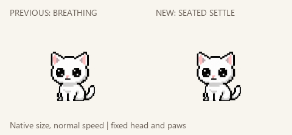
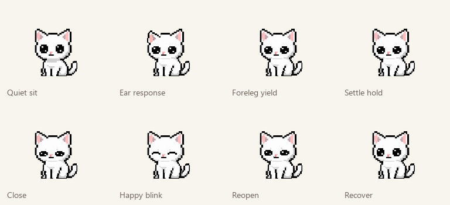

A quiet little sit.
Previous breathing idle on the left; new seated idle on the right. Native desktop size, normal speed, synchronized time. No breathing pulse or whole-body bob: one small foreleg/shoulder resettle over planted paws, an ear response and a brisk happy blink.

5.8-second loop with a 300 ms blink and 4.5 seconds of shared quiet holds. The 12-second comparison shows two complete cycles.

Updated tilted left/right looks, original lazy tail and accepted tail chase/catch remain unchanged.
Source, checks and limits